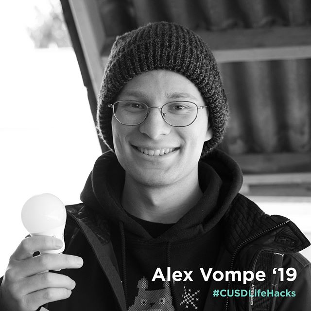

“LED lightbulbs are 80% more efficient than traditional lighting such as fluorescent and
incandescent lights. They have longer life spans, draw less power than traditional lighting,
and do not contain toxic elements that would otherwise contaminate the environment once the
bulbs are disposed of. Using LED lightbulbs in your home is an easy way to save money, energy
and the environment!” - Alex Vompe 💡 #cusdlifehacks #cusd #sustainableliving #sustainability
#ledlights #led #energyefficiency
"When food decomposes in a landfill it's likely that it's
undergoing anaerobic breakdown which results in the release of methane (a much more potent
greenhouse gas). However, composting allows the scraps to undergo an aerobic decomposition
process, which will result in the release of CO2. For this reason, I keep a small container to
compost food scraps I may have back at my dorm from cooking, and bring them over to MVR to be
composted. Not only can I make a difference, but I also get to be a role model." - Brandon Hoak
#sustainableliving #composting #compost #cusdlifehacks #cusd how do YOU promote a sustainable
lifestyle? MESSAGE US TO BE FEATURED! 🌎🙏
“The fashion industry is one of the most polluting industries in
the world, just after oil. For this reason, I have been boycotting fast fashion for the past
few years. Now I only buy clothing secondhand or from ethical brands. Thrifting is a great way
to give clothing that would otherwise end up in a landfill a second life.” - Erika Kane
#cusdlifehacks #sustainableliving #sustainablefashion #secondhand #sustainabilitymatters
#lifestyle How do YOU promote sustainability in your daily life? Message us if you would like
to be featured! 🙌🏻🌎
Citations:
Images Source: CUSD Marketing Team
CUSD Logo Source: CUSD Marketing Team
Join Button Image Source:The Noun Project
Partner Button Image Source:The Noun Project
Donate Button Image Source:The Noun Project